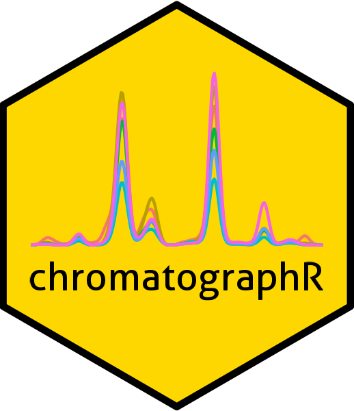
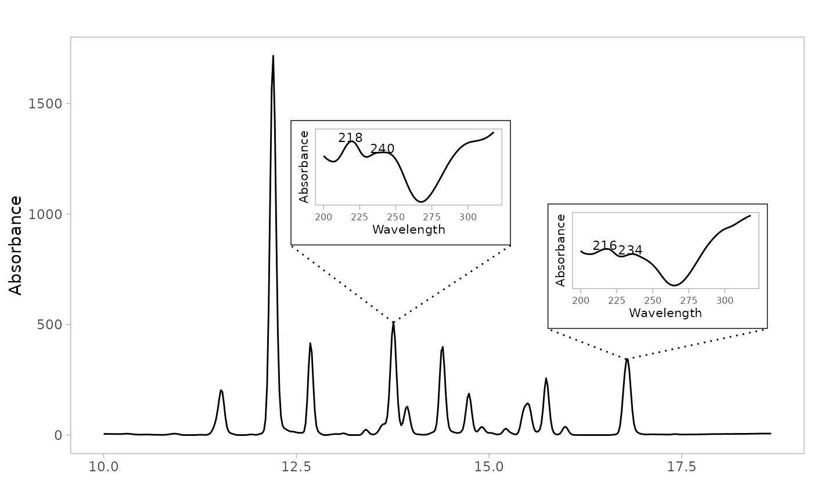

Plot a chromatogram or chromatograms with an inset UV spectrum
Source:R/plot_spectrum.R
plot_spectrum_inset.RdPlots a chromatogram (either a single trace or multiple traces) with an inset UV spectrum for a specified peak. Dotted lines connect the peak apex to the corners of the inset box.
Usage
plot_spectrum_inset(
loc,
peak_table,
chrom_list = NULL,
idx = "max",
lambda = "max",
position = "topright",
inset_width = 0.35,
inset_height = 0.35,
ylim = NULL,
xlim = NULL,
engine = "ggplot",
scale_spectrum = TRUE,
verbose = getOption("verbose"),
inset_text_size = 8,
...
)Arguments
- loc
Peak name or vector of names in the peak table (e.g.
"V10").- peak_table
A
peak_tableobject created byget_peaktable.- chrom_list
A list of chromatograms in matrix format (timepoints x wavelengths). If no argument is provided here, the function will try to find the
chrom_listobject using the pointer in thepeak_table.- idx
Index of chromatogram(s) to plot. If
"max"(default) or a scalar, plots a single trace usingplot_spectrum(). If a vector, plots multiple traces usingplot_chroms().- lambda
Wavelength to use for the chromatographic trace and for locating the peak apex. Either a numeric value or
"max"(default) to use the wavelength of maximum absorbance.- position
Position of the inset. One of
"topright"(default),"topleft","top","left", or"right". Alternatively, a numeric vector of length 2 giving the proportional coordinates of the bottom-left corner, e.g.,c(0.6, 0.6), used together withinset_widthandinset_height.- inset_width
Width of the inset as a proportion of the plot width. Defaults to
0.35.- inset_height
Height of the inset as a proportion of the plot height. Defaults to
0.35.- ylim
Y axis limits for the main plot. Passed to
plot_chroms()orplot_spectrum().- xlim
X axis limits for the main plot. Passed to
plot_chroms()orplot_spectrum().- engine
Plotting engine. Currently only
"ggplot"is supported.- scale_spectrum
Logical. If
TRUE, scales spectrum to unit height. Defaults toFALSE.- verbose
Logical. If
TRUE(default), prints verbose output to console.- inset_text_size
Base size for text elements in inset. Defaults to
8.- ...
Additional arguments passed to
plot_chroms()orplot_spectrum().
Examples
if (requireNamespace("ggplot2", quietly = TRUE)) {
data(pk_tab)
data(Sa_warp)
# single trace with inset spectrum
plot_spectrum_inset("V15", peak_table = pk_tab)
# multiple traces, inset in the center
plot_spectrum_inset("V15", peak_table = pk_tab, idx=c(1:4),
position = "top")
# manual inset placement
plot_spectrum_inset("V15", peak_table = pk_tab,
position = c(0.6, 0.3),
inset_width = 0.35, inset_height = 0.25)
# multiple peaks with a list of positions
plot_spectrum_inset(c("V15", "V26"), peak_table = pk_tab,
position = list(c(0.3, 0.5), c(0.65, 0.3)),
inset_width = 0.3, inset_height = 0.3)#'
}
